Transom
Boarding Step
A self-set brief to build weldment and sheet-metal skill: a bolt-on 316 stainless re-boarding step for 4.5–6m trailer boats. A welded upper frame that carries the load, a telescoping lower section that drops below the waterline, and no sharp edge anywhere a bare foot can find one — sized for someone heavy hauling themselves out of the water wet and awkward.
{kind=link}
The Brief
I set this one myself to work specifically on weldment modelling, sheet-metal flat patterns and welding-symbol documentation — the parts of a mechanical drawing pack I wanted more practice with. The brief imagines a fabrication shop supplying stainless accessories to the trailer-boat market: 316 tube and folded plate, mirror-polished, drain paths on every horizontal surface, and nothing sharp on a barefoot deck.
The design constraints came out of how people actually get hurt. Re-boarding a small boat from the water is the dangerous moment — for divers, older anglers, anyone who's gone in for a swim. The bottom rung has to sit below the waterline so there's something to reach with a foot before there's anything to reach with a hand, and it can't sit there permanently or it drags, fouls and gets clipped on the ramp. So the step has to stow, which means a sliding joint — and a sliding joint is exactly where cheap ladders flex, seize and eventually fail.
That trade-off is the whole project: how much travel can you give it before the joint that allows the travel becomes the weakest thing in the load path?
First Sketches
The first pass was drawn over a rough transom in two views — stern-on and in profile — so the stowed and deployed positions could be checked against the things that are actually in the way: the outboard leg, the prop, the boarding platform lip and the freeboard the user has to clear.
Stern-on, the step has to sit clear of the outboard and its prop arc, far enough outboard that a foot on the bottom rung isn't kicking the leg. In profile, the constraint flips: stowed, nothing can hang below the hull line where it will foul on the ramp; deployed, the bottom rung has to reach well under the water, which sets the travel the sliding section has to deliver.
{kind=link}
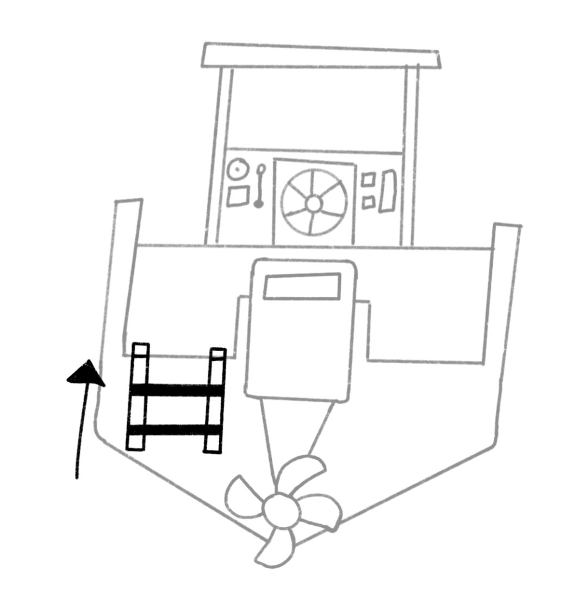
Stern-on — stowed
{kind=link}
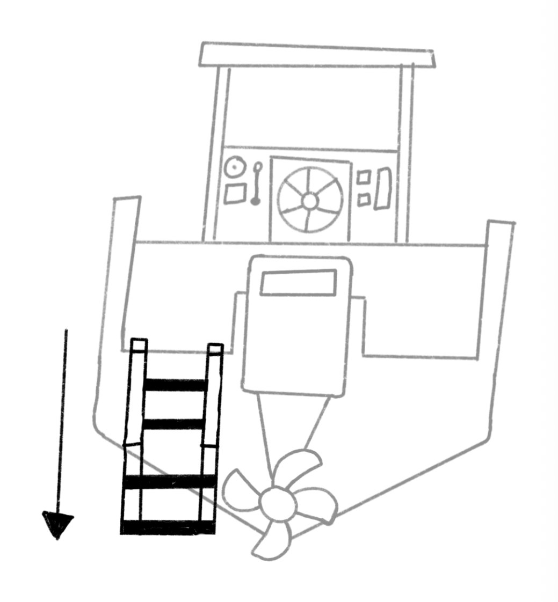
Stern-on — deployed
{kind=link}
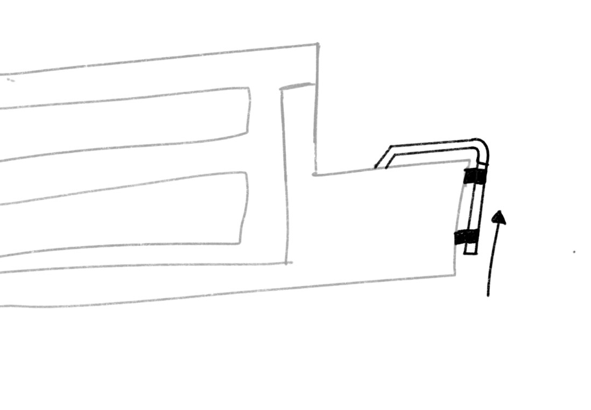
Profile — stowed
{kind=link}
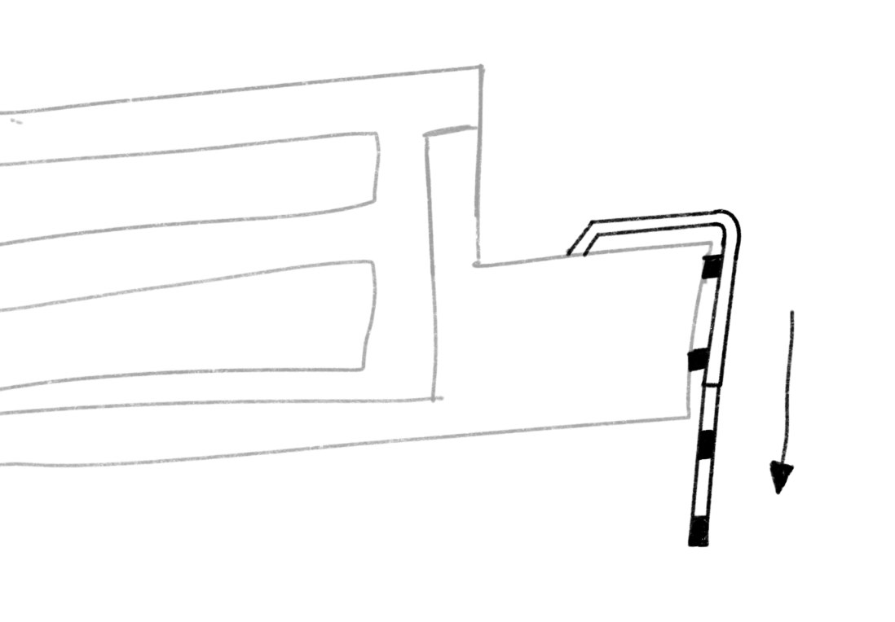
Profile — deployed
{kind=link}
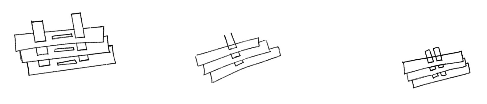
Three-quarter thumbnails — tread pitch and stile spacing
Telescoping Architectures
Three ways to make it telescope, drawn side by side stern-on. They differ in one thing that matters more than anything else: how many load paths run between the tread you're standing on and the frame bolted to the boat.
{kind=link}
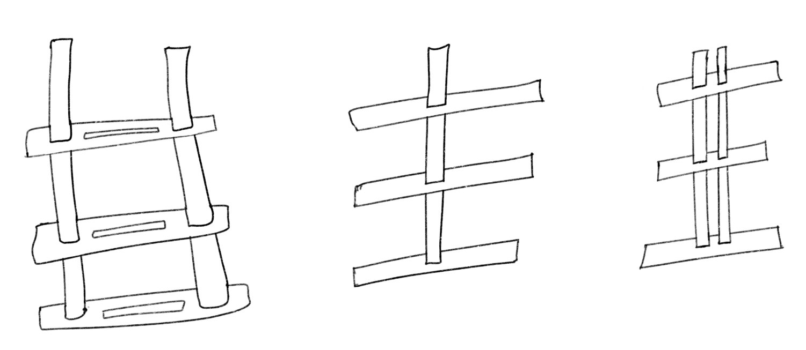
Splayed twin-stile · single centre spine · close-coupled twin
The critical load case isn't someone standing politely in the middle of a tread. It's one foot on the outboard corner of the bottom rung while the rest of the body is still hanging off the grab rail — an eccentric load at the very end of the longest lever the design has. Where that load goes decides the whole architecture.
| Architecture | How the load travels | What limits it | Call |
|---|---|---|---|
| Splayed twin-stile | Tread spans stile to stile and behaves as a beam supported at both ends. Two parallel load paths; an off-centre foot is shared, not resisted by one member. | Widest stowed envelope. The rake means both slide tracks have to stay parallel through their travel or the whole thing binds — tolerance, not strength, is the risk. | Carried forward |
| Single centre spine | Treads cantilever off one column. An outboard foot puts a bending moment and a torque into that single section, and both peak at the tread-to-spine weld. | No redundancy — one weld root is the entire load path. Section size has to grow fast to hold the torsion, which cancels out the packaging it was chosen for. | Dropped |
| Close-coupled twin | Two tubes, so two load paths — but they sit close together, so the couple resisting twist only acts over that narrow spacing. | An outboard foot still drives a large differential push-pull between the two tubes, and the treads stay part-cantilevered. Better than one spine, worse than full width. | Dropped |
The splayed twin-stile won because it's the only one of the three where the sliding joint is loaded the way a slide is good at being loaded. The tread reaction resolves into a couple across the engagement length of the inner section inside the outer stile — so the fix for a marginal joint is simply more overlap, not a heavier weld. That's a much better problem to have on a part that has to keep working after five seasons in salt water.
The Resolved Assembly
Four parts. A welded main frame in 40 × 40 × 3.2 SHS, two folded sheet-metal treads, a laser-cut end cap at the foot of each stile, and a solid Ø20 bar rung running between them. Nine hundred-odd millimetres of stainless with one moving relationship in it.
The rung is the part the whole telescoping decision comes down to. It's fitted into the stiles before the end caps go on and then deliberately not welded — the end cap is what retains it, so the joint stays a bearing surface rather than becoming a weld that has to survive a fatigue cycle every time someone climbs out of the water. The C-slot in the end cap doubles as the drain, and the note on the sheet says so: do not seal.
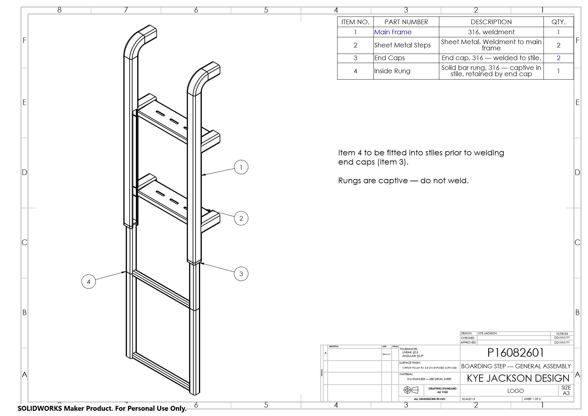
Every welded joint on the assembly is called up once, at the sheet level, rather than symbol by symbol: fillet weld, 5 mm leg, all-round, dressed flush and polished back to the adjacent surface finish. On a part people run a bare foot over, the weld spec and the finish spec are the same requirement written twice.
Detail Drawings
Four detail sheets to AS 1100, drawn against my own A3 sheet format. Between them they cover the three fabrication routes the assembly uses — a tube weldment, a sheet-metal fold, and two machined-from-stock parts.
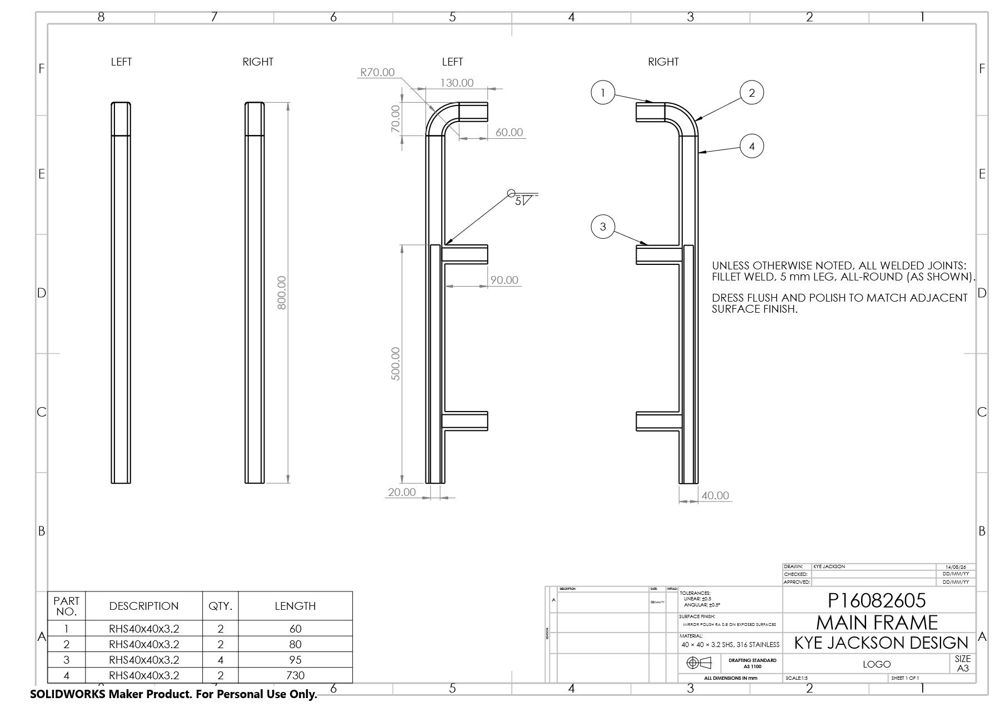
Main frame — 40 × 40 × 3.2 SHS Open PDF ↗
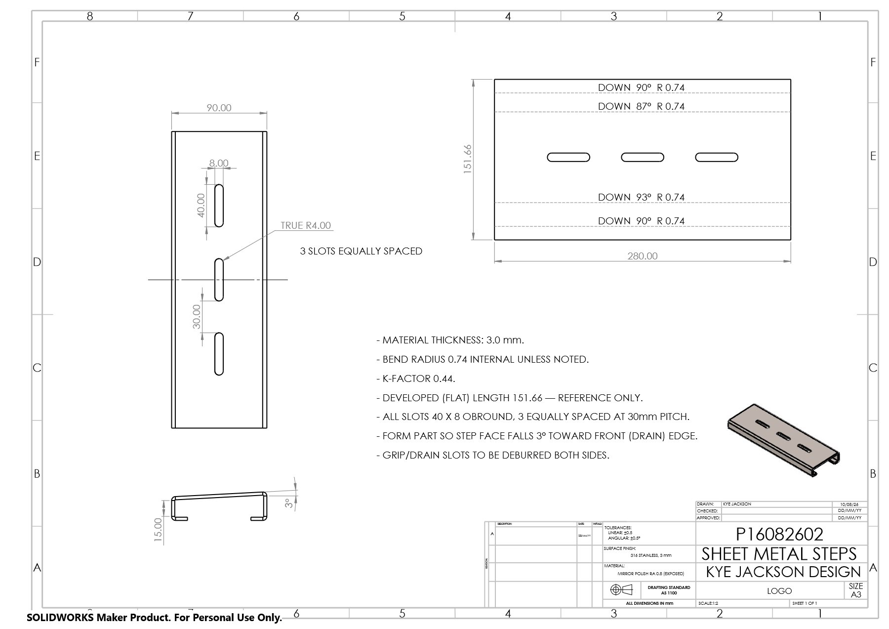
Sheet metal steps — flat pattern Open PDF ↗
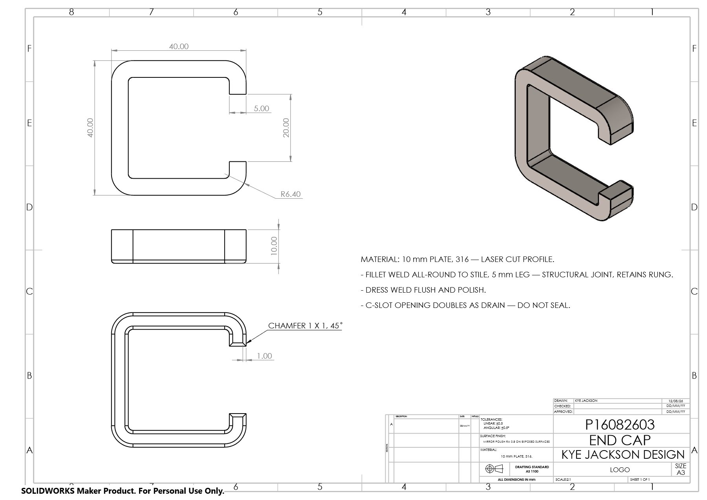
End cap — 10 mm laser-cut C Open PDF ↗
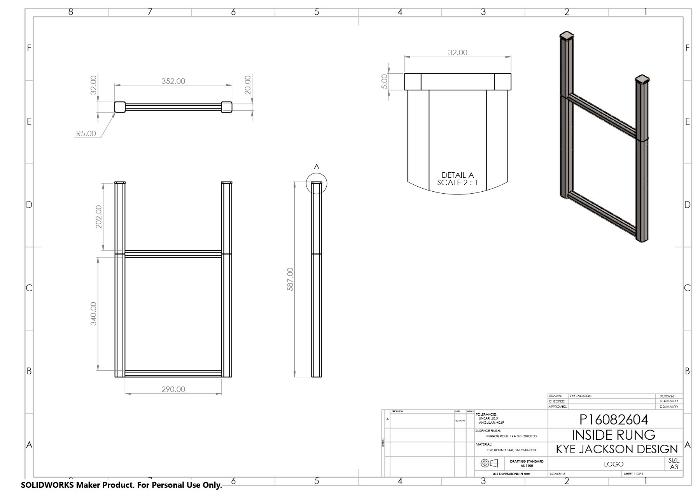
Inside rung — Ø20 bar, captive Open PDF ↗
The tread sheet is the one I'd point at. It carries the flat pattern with bend callouts and K-factor 0.44 against a 0.74 internal radius, three 40 × 8 obround slots at 30 mm pitch doing grip and drainage at once, and a note to form the part so the step face falls 3° toward the front edge — so a wet foot lands on a surface that's already shedding water rather than holding it.
Still to come: a fixing detail for the transom bolt pattern, a hand calculation backing the 130 kg rating through the slide engagement, and the catalogue render set — a CMF close-up on the polish and drainage, and one in-context shot on a transom.
The Brief Document
The full written brief this project is working to — client profile, design language, deliverables, AS1100 drafting requirements and the success-criteria checklist I'm marking the outcome against.